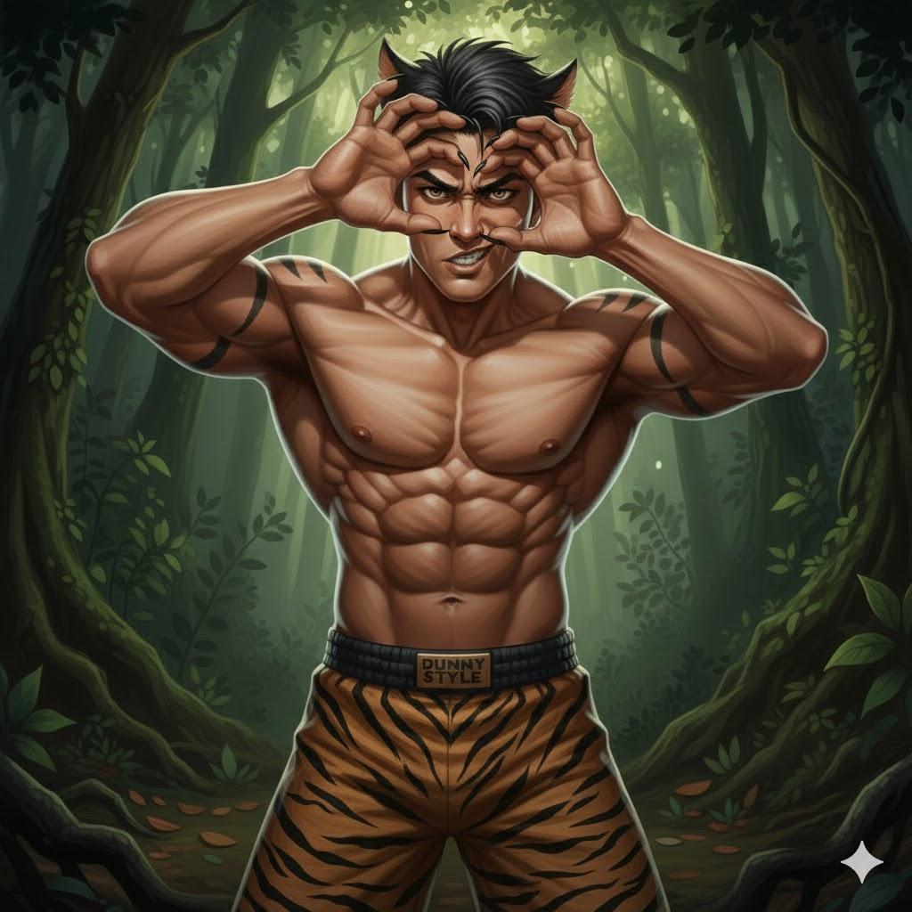
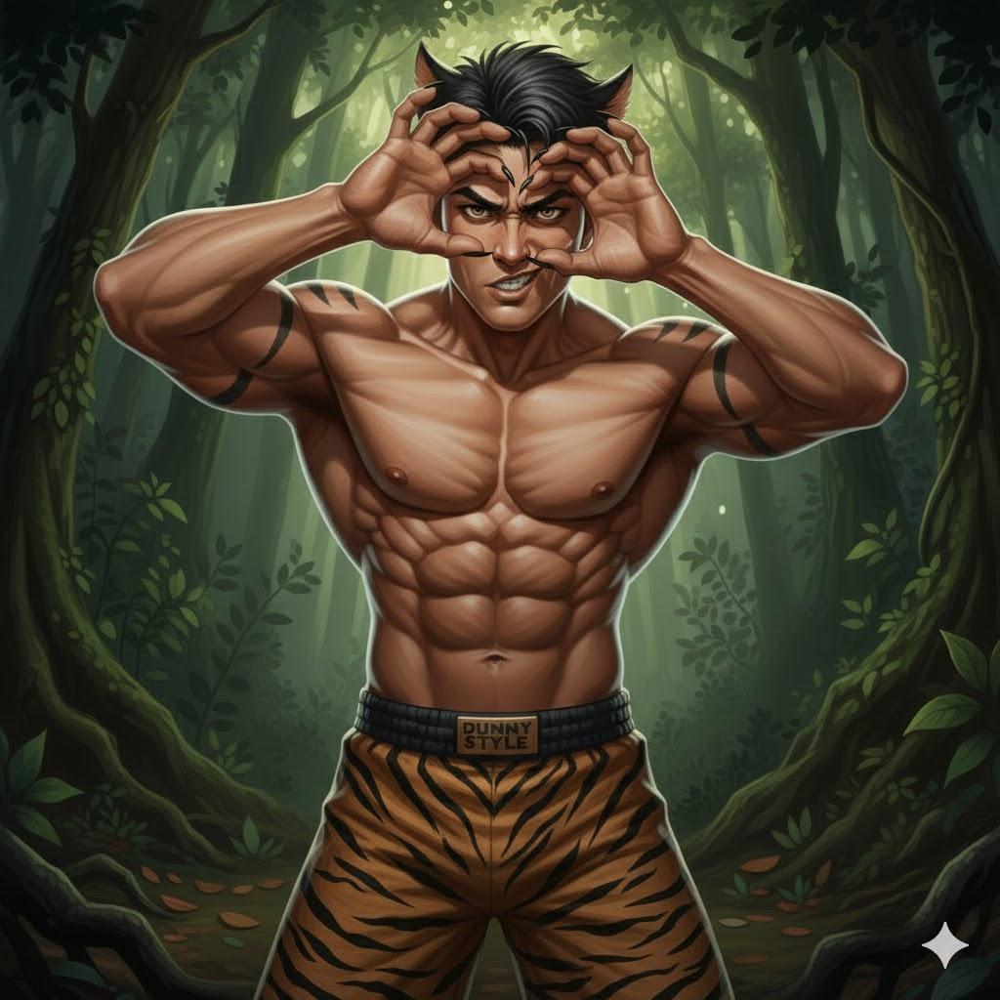

SKIN
MALIN DEWA
 

STATISTIK & STATUS NYAWA DAN TENAGA
- Serangan 9
- Penguasaan 6
- Kesukaran 8
- Kekebalan 7
- HP = 2800 +180
- Mana = --- +--
BIODATA
- Nama Pahlawan : MALIN DEWA
- Nama Sebenar : Malin Dewa
- Gelaran : SANG HARIMAU JADIAN
- Umur : ??? Tahun
- Number Pahlawan : 012
- Jenis Pahlawan :
 PENDEKAR
PENDEKAR - Makhluk : Harimau Jadian
- Bangsa : Melayu
- Negeri Asal : Hutan Taman Negara
- Pekerjaan : Penjaga Hutan
- Tinggi : 196 cm
- Berat : 73 Kg
SKILL
-
PASIF: HARIMAU JADIAN
- (Fizikal, Buff)
- Setiap kali Malin bertukar menjadi harimau melalui mana-mana kemahirannya, serangan fizikalnya bertambah sebanyak 10% – 25% (bergantung kepada level hero) selama 3 saat.
- Tidak menggunakan mana, hanya cooldown sebagai penghad.
-
SKILL 1: CENGKAMAN BELANG
- (Fizikal, CC, Burst Damage, Dash)
- Level: 1-4
- Malin melompat ke arah musuh yang dipilih dalam jarak 6 unit, mencakar mereka dengan kuku tajam.
- Musuh terkena stun selama 1.2s dan menerima 150/200/250/300 (+80% Total Physical Attack) damage.
- Selepas serangan, Malin kembali ke bentuk manusia.
- Cooldown: 9/8.5/8/7.5 saat.
-
SKILL 2: PECUTAN RIMBA
- (Fizikal, Buff, Debuff Removal, Dash)
- Level: 1-4
- Malin meningkatkan kelajuan pergerakan sebanyak 30%/35%/40%/45% selama 3 saat.
- Menghapuskan semua kesan CC (stun, slow, immobilize, dan suppress) sebaik sahaja ditukar ke bentuk harimau.
- Selepas masa tamat, kembali ke bentuk manusia.
- Cooldown: 12/11/10/9 saat.
-
SKILL 3: NGAUMAN RIMAU
- (Fizikal, AOE, CC, Slow Effect, Burst Damage)
- Level: 1-4
- Malin mengaum dengan kuat, mencipta gelombang kejutan dalam radius 5 unit.
- Musuh yang terkena gelombang ini menerima 180/230/280/320 (+60% Total Physical Attack) damage dan terkena slow sebanyak 40% selama 2.5 saat.
- Selepas mengaum, Malin kembali ke bentuk manusia.
- Cooldown: 14/13/12/11 saat.
-
ULTI: SUMPAHAN HARIMAU JADIAN
- (Fizikal, Berserk Mode, Auto-movement, DPS, True Damage, Execute, Tower Immunity)
- Level: 1-3
- Malin berubah buas selama 6/7/8 saat dan secara automatik menyerang musuh terdekat.
- Semasa dalam bentuk ini:Damage serangan meningkat sebanyak 50%.Serangan Malin mengabaikan 20% pertahanan musuh (True Damage).Jika Malin membunuh musuh, masa kemahiran bertambah 3 saat.Imun terhadap serangan turret.
- Malin tidak boleh dikawal oleh pemain (serangan berlaku secara automatik).
- Selepas masa tamat, Malin kembali ke bentuk manusia dengan lifesteal 25% daripada damage yang diberikan dalam bentuk harimau.
- Cooldown: 50/45/40 saat.
PERSONALITI
- Setia pada kawan, tetapi tidak mudah mempercayai sesiapa
- Penuh semangat perjuangan dan kesungguhan
- Suka bertindak tanpa berfikir panjang
- Cenderung bersikap serius dan pendiam
- Menyesali masa lampaunya tetapi berusaha untuk menebus kesalahan
HIKAYAT
Maka tersebutlah kisah seorang pemuda bernama Malin Dewa, anak tunggal seorang ibu tua yang hidup dalam serba kekurangan. Malin, seorang pemuda yang elok rupa parasnya, tidak hanya gagah perkasa tetapi juga berbudi pekerti luhur. Kasihnya kepada ibunya tiada taranya, ibarat bulan menyinari malam yang gelap. Tatkala ibunya jatuh sakit dan rezeki mereka makin sempit, Malin pun nekad untuk merantau, mencari ilmu dan penghidupan demi membela nasib keluarganya.
Malin Dewa, dengan hati yang bulat dan azam yang teguh, menempuh jalan yang penuh liku. Dalam perjalanannya, datanglah pelbagai dugaan yang menguji keimanan dan kejujurannya. Ada manusia yang cuba menipu, ada makhluk halus yang cuba menggoda, namun Malin tetap teguh seperti akar tunjang yang mencengkam bumi. Keikhlasannya menjadi perisai, dan doanya menjadi pedoman.
Pada suatu malam yang dingin, di sebuah hutan yang kelam, Malin bertemu dengan seorang pemuda tampan berbaju putih berkilauan. Pemuda itu memperkenalkan dirinya sebagai seorang Putera Bunian, yang telah meninggalkan alam bunian kerana mahu hidup sebagai manusia. Mereka berdua segera bersahabat, bagaikan bulan dan bintang yang seiring di langit malam. Sang putera membantu Malin mencari rezeki, malah menjadi teman setianya dalam menghadapi pelbagai cabaran dunia.
Namun, sang putera menetapkan satu syarat kepada persahabatan mereka: "Jangan pernah kau ceritakan asal-usulku kepada sesiapapun, wahai Malin. Kerana andai kau berbuat demikian, celakalah kita berdua.“ Malin bersumpah akan memegang janji itu. Bertahun-tahun kemudian, rezeki Malin melimpah ruah, dan dia kembali ke pangkuan ibunya bersama sang putera. Hidup mereka menjadi aman dan bahagia. Namun, sifat manusia yang lemah sering kali mudah termakan godaan dunia. Sedikit demi sedikit, sifat tamak menyelinap ke dalam hati Malin. Pada suatu hari, akibat terpengaruh dengan hasutan seorang bunian lain, Malin menceritakan rahsia asal-usul sahabatnya.
Mendengar pengkhianatan itu, sang putera menjadi amat murka. Namun, dia tidak mengucapkan walau sepatah kata, hanya matanya yang redup melambangkan hati yang terluka. Ketika itulah, satu suara bergema di angkasa: "Wahai manusia yang khianat, kau telah melanggar janji! Maka dengan itu, aku menyumpah kau menjadi seekor harimau, agar kau mengerti perasaan sahabatmu yang telah kau sakiti." Dalam sekelip mata, tubuh Malin bertukar menjadi seekor harimau belang, dan dia melarikan diri ke dalam hutan belantara.
Berabad lamanya Malin Dewa hidup dalam bentuk harimau, menjadi penjaga rimba yang tidak dikenali sesiapa. Namun, takdir menemukan dia dengan seorang pemuda bernama Ulek Mayang, seorang bekas bunian yang meninggalkan alamnya demi menjalani kehidupan manusia. Ulek Mayang melihat harimau itu dan berkata: "Aku tahu siapa engkau, Malin Dewa. Kisahmu pernah diceritakan di alam bunian, dan aku tahu penderitaanmu. Kini, biar aku bebaskan kau dari sumpahan ini."
Dengan mantera sakti yang penuh dengan jampi-jampi, Ulek Mayang mengembalikan Malin Dewa kepada bentuk asalnya, tetapi dengan satu kelebihan luar biasa: "Kini kau manusia kembali, tetapi kau juga punya keupayaan bertukar menjadi harimau. Gunakanlah kelebihan ini untuk menebus dosamu yang lalu dan melindungi mereka yang memerlukan."
Malin Dewa bertanya, "Siapakah engkau sebenarnya, wahai Ulek Mayang?" Ulek Mayang menjawab, "Aku bekas bunian, sama seperti sahabatmu dahulu. Namun, aku telah meninggalkan alam itu kerana peraturan mereka yang kejam. Aku tahu kisah putera bunian itu, dan aku ingin menebus apa yang tidak dapat dilakukan dahulu. Kau masih punya kesempatan untuk menjaga nama baiknya."
Malin Dewa akhirnya mengikuti Ulek Mayang ke sebuah tempat rahsia, tempat berkumpulnya golongan sakti yang menjaga keseimbangan dunia. Di sana, Malin Dewa mula memahami makna sebenar kuasa dan pengorbanan, berikrar untuk tidak mengulangi kesilapan masa lalu. Kini, dia bersedia menggunakan kuasa harimaunya untuk kebaikan, sebagai penebusan dosa-dosa lampaunya.